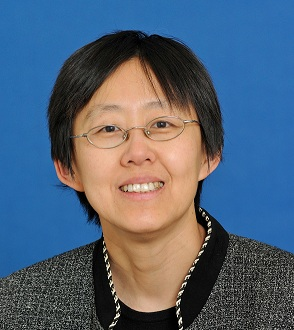

Dr. He is a Professor in Computer Science Department at Old Dominion University. She obtained her B.S. degree in Applied Mathematics from Jilin University in China in 1990, and M.S. degree in Mathematics from New Mexico State University in 1994. She received the PhD degree from an interdisciplinary program at Baylor College of Medicine in Structural and Computational Biology and Molecular Biophysics (SCBMB Program) in 2001. She studied virus structures and assembly in the PhD thesis. Her current research area is in deep learning methods in molecular imaging and protein bioinformatics.